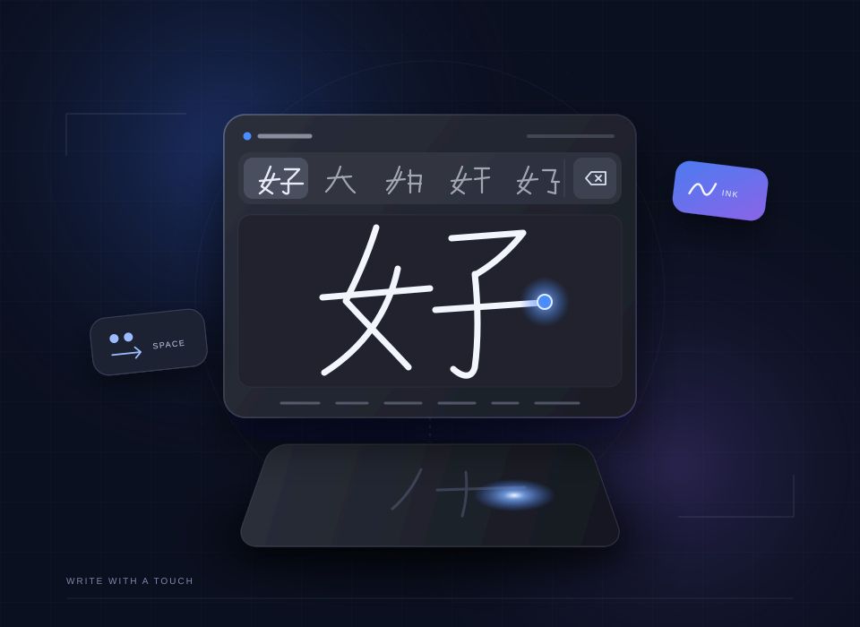

PROJECT 02 / 09HANDWRITING / TOUCHPAD
输入工具 · Windows
TouchWrite
用手指在触摸板上写字，就能输入。
TouchWrite 在 Windows 上重现 macOS 的触摸板手写。按下快捷键，触摸板就变成手写板；用一根手指写字，Windows 内置的手写识别会把结果直接输入到目前的输入框，不必切换输入法，也不用另外开窗口。

OVERVIEW
适合哪些使用情境？
适合遇到不会拼音、注音或仓颉的字，想直接写出来的人；也适合习惯 Mac 触摸板手写、换到 Windows 笔记本电脑后仍想这样输入的用户。手写面板不抢焦点，写好的字会直接送到正在使用的程序。
FEATURES
功能介绍
触摸板就是手写板
按 Ctrl + Shift + Space 开始或停止手写，也可在设置中录制任意组合键。屏幕上的面板与触摸板位置一一对应：顶部一条是候选字，右上角是删除键，其余是书写区。
自动输入与候选字
停笔约 0.9 秒后自动输入第一个候选字，等待时间可调整，也能关闭自动输入。轻点触摸板顶部或按 1–9 选择候选字，会替换刚输入的字。
两指手势
两指向右滑输入空格、向下滑换行、向上滑撤销上一笔，两指轻点立刻输入目前的字。轻点右上角删除，按住可连续删除；写字途中则清除笔划。
写字时锁定鼠标
手写模式下鼠标指针会被锁定，避免写字时移动光标或误点。按 Esc 或快捷键退出手写后，鼠标立即恢复。
繁体与简体输出
使用 Windows 语言套件内置的手写识别，可选择识别引擎。输出字形可保持识别结果，或一律转为繁体或简体后再输入。
常驻系统托盘
启动后在系统托盘待命，可设置手写面板大小与登录 Windows 时自动启动。界面语言可选跟随系统、繁体中文或简体中文。
GETTING STARTED
如何开始
下载并打开
从 GitHub Releases 下载最新版本，运行 TouchWrite.exe。启动后程序会在系统托盘（右下角）待命。
确认手写识别
右键点系统托盘图标打开设置，在“手写识别”确认可用的识别引擎。想识别繁体字，可在 Windows 语言设置为中文（台湾）或中文（香港）安装“手写”。
按快捷键开始写字
点进想输入文字的地方，按 Ctrl + Shift + Space，用一根手指在触摸板上写字。停笔后会自动输入，也可以点击候选字。
按 Esc 结束
没有笔划时按 Esc，或再按一次快捷键，即可退出手写模式，鼠标也会立即恢复。
REQUIREMENTS
系统需求
- 操作系统
- Windows 10（1809）或以上，x64。
- 运行环境
- 需要 .NET 9 桌面运行环境。
- 触摸板
- 精确式触摸板（Precision Touchpad）。大部分 2018 年后的笔记本电脑都支持；旧式 Synaptics／ELAN 驱动的触摸板读不到手指的绝对位置。
- 手写识别
- Windows 手写识别语言套件。中文（简体）识别器也能识别不少繁体字；需要繁体识别时，可另外安装中文（台湾）或中文（香港）的“手写”。
GOOD TO KNOW
常见问题
我的触摸板可以使用吗？
需要精确式触摸板（Precision Touchpad），大部分 2018 年后的笔记本电脑都是。旧式 Synaptics 或 ELAN 驱动的触摸板读不到手指的绝对位置，无法用来手写。
为什么手写时鼠标不能动？
为了避免写字时移动光标或误点，手写期间所有鼠标（包括外接鼠标）都会暂停。按 Esc 或快捷键退出手写，鼠标就会恢复。
为什么某些窗口无法输入文字？
Windows 不允许一般程序向以系统管理员身份运行的窗口输入文字。如需在这类窗口手写，请同样以系统管理员身份运行 TouchWrite。
两指滑动时，页面也跟着滚动了？
部分程序（例如浏览器）会直接处理触摸板的两指滚动，所以两指滑动手势可能同时让页面滚动一下。
设置保存在哪里？
设置文件存放在 %APPDATA%\TouchWrite\settings.json，包括快捷键、识别引擎、输出字形、自动输入与面板大小等选项。
DOCUMENTATION
完整说明与反馈
完整操作方式、需求与限制以项目 README 为准。遇到问题或有新想法，可在 GitHub Issues 提出。